Нижний Новгород (в разговорной речи часто — Нижний) — город в России, административный центр Нижегородской области, центр и крупнейший город Приволжского федерального округа. Расположен в центре Восточно-Европейской равнины на месте слияния Оки и Волги. Ока делит город на две части — верхнюю на Дятловых горах и нижнюю на её левом низинном берегу.
Нижний Новгород — пятый по численности населения город России с населением 1 272 719 человек, важный экономический, транспортный и культурный центр страны. Город является центром Нижегородской агломерации, население которой насчитывает 2,08 млн чел.; она является четвёртой по величине в стране и второй в Среднем Поволжье.
Нижний Новгород расположен в 400 км к востоку от Москвы, а транспортный коридор между двумя городами выделяется как конурбация Москва — Нижний Новгород. Известен как крупный центр судо-, авиа-, автомобилестроения и информационных технологий.
Муниципальное образование "город Нижний Новгород" является городским округом, городом областного значения.
Площадь: 46 000 га.
В городе сохранилось немало уникальных памятников истории, архитектуры и культуры, что дало основание ЮНЕСКО включить Нижний Новгород в список 100 городов мира, представляющих мировую историческую и культурную ценность.
Нижний Новгород был основан в 1221 году великим князем владимирским Юрием (Георгием) Всеволодовичем – внуком основателя Москвы князя Юрия Долгорукого и правнуком киевского князя Владимира Мономаха.
Нижний Новгород постоянно упоминается в русских летописях, укрепляясь как крупный политический и экономический центр Северо-Восточной Руси, оставаясь духовным оплотом православия в Поволжье. В это время он нередко служил объектом конфликтов при дележе сфер влияния между набиравшими силу Москвой и Тверью. Была пора, когда Нижний был назван столицей великого княжества, которое просуществовало более полустолетия (1341-1392 гг.) и не уступало Москве и Твери в стремлении главенствовать над Русью.
С конца XV века на многие десятилетия Нижний становится оплотом Москвы в борьбе за великий речной путь. Угроза вражеских нападений сохранялась, и без мощной каменной крепости становилось все труднее. В это время в городе возводится каменный кремль, ставший выдающимся сооружением русского фортификационного искусства.
Со взятием Иваном Грозным Казани (в 1552 г.), а затем и Астрахани Нижний Новгород сделался центром, через который шла вся торговля Русского государства с Востоком. В 17 веке Нижний Новгород был центром массовых формирований судовых караванов, найма на них сотен тысяч работных.
На XVIII век приходится возвышение Нижнего Новгорода как административного центра. С 1714 года город стал губернским, а с 1779 по 1796 год - центром Нижегородского наместничества, включавшего в себя в разное время Вятскую, Костромскую, Пензенскую губернии и Алатырскую провинцию.
На рубеже 18 и 19 веков Нижний Новгород стал крупным научным и культурным центром страны.
В начале 19 века нижегородцы приняли активное участие в Отечественной войне. Местное ополчение участвовало в заграничном походе русских войск до полной победы над Наполеоном и было расформировано лишь на исходе 1815 года.
На 30-40 годы 19 века приходятся крупнейшие градостроительные преобразования города.
В суровые годы Великой Отечественной войны 1941-1945 гг. нижегородцы-горьковчане внесли достойный вклад в Победу.
29 сентября 1957 года приступило к регулярному вещанию государственное Горьковское областное телевидение.
2 декабря 1970 года указом Президиума Верховного Совета СССР город Горький был награждён Орденом Ленина. Это нашло отражение в современном гербе города — гербовый щит с традиционным оленем обрамлён орденской лентой Ордена Ленина.
В 1985 году в Нижнем Новгороде открылся метрополитен.
Таблица 1 – Достопримечательности Нижнего Новгорода
| Фотография | Описание |
| 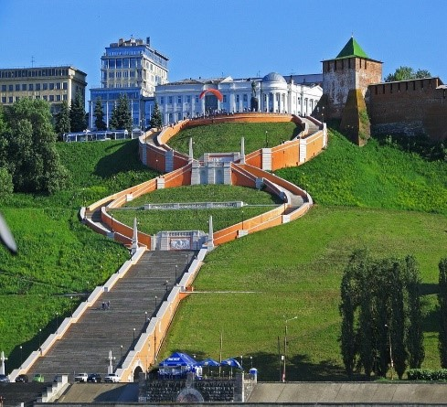 | Чкаловская лестница (иногда Волжская лестница) — монументальная лестница в историческом центре Нижнего Новгорода, соединяющая Верхне-Волжскую и Нижне-Волжскую набережные. Построена по проекту архитекторов Александра Яковлева, Льва Руднева и Владимира Мунца. Являлась самой длинной лестницей в России до присоединения Крыма. |
| 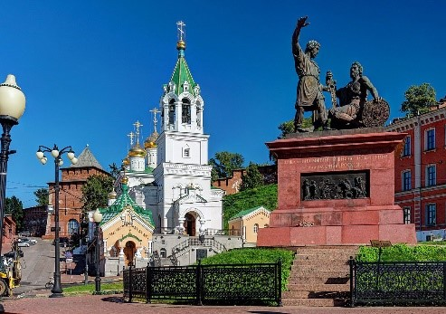 | Па́мятник Ми́нину и Пожа́рскому — копия памятника, установленного на Красной площади в Москве. Памятник расположен в исторической части Нижнего Новгорода на площади Народного Единства, под стенами Кремля, возле церкви Рождества Иоанна Предтечи. |
| 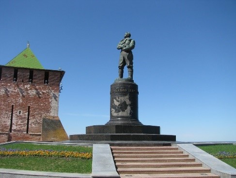 | Памятник Валерию Чкалову — одна из достопримечательностей Нижнего Новгорода, установлен вблизи Георгиевской башни Нижегородского кремля в честь знаменитого советского лётчика, совершившего первый беспосадочный перелёт из СССР в США через Северный полюс. |
| 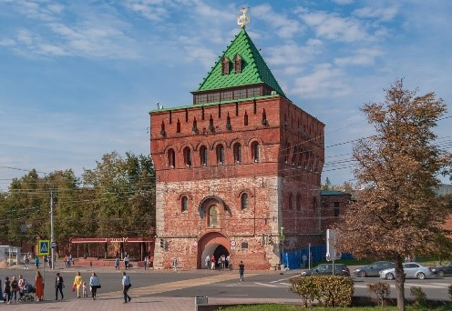 | Дмитриевская (Дмитровская) башня — проездная башня Нижегородского кремля, выходящая на площадь Минина и Пожарского. Считается главными воротами крепости; является неофициальным символом Нижнего Новгорода. |
| 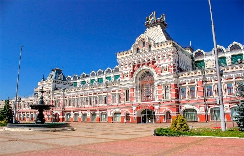 | Нижегородская ярмарка — исторический район, где располагалась крупнейшая ярмарка Российской империи. Центральный выставочный центр Нижнего Новгорода. |
Рисунок 1
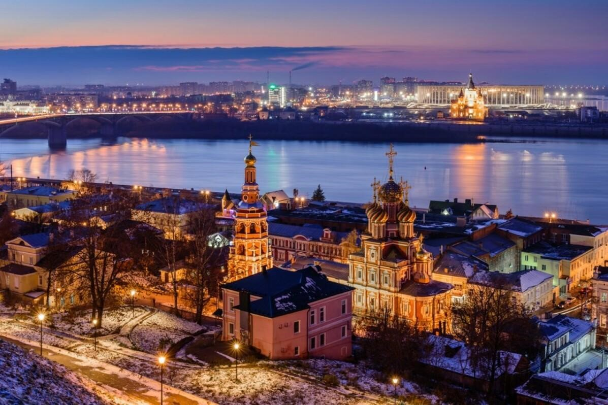Рисунок 2
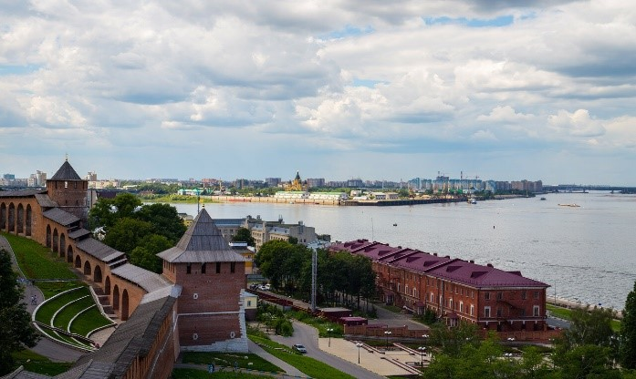Рисунок 3
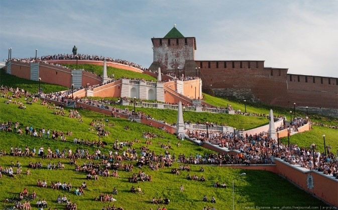Рисунок 4
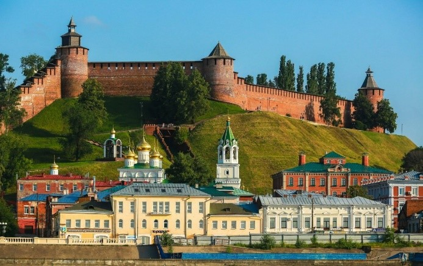Рисунок 5
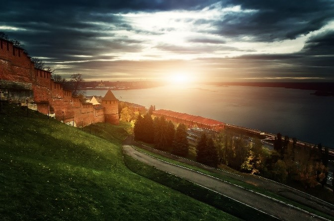Рисунок 6
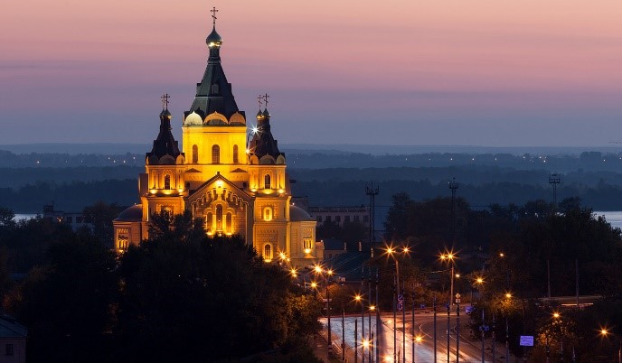Рисунок 7
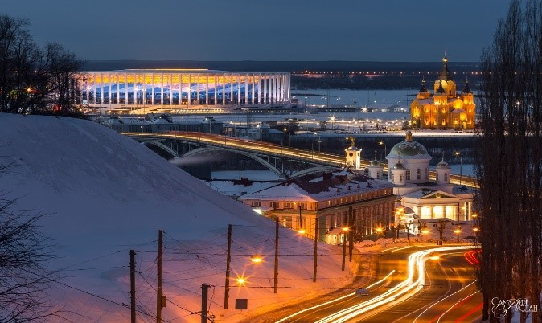Рисунок 8
Рисунок 9 - Вид со спутника
Рисунок 10 - карта города
Там где Ока обнимается с Волгой рекой
Даль широка и до неба легко достать рукой
Город стоит, так похожий на светлый сон
Нижний Новгород называется он..
Город стоит, так похожий на светлый сон
Нижний Новгород называется он..
Словно в кино вижу юными мать и отца
Очень давно в этом городе пели их сердца
Мне повезло у истоков моих начал
Нижний Новгород мою зыбку качал
Мне повезло у истоков моих начал
Нижний Новгород мою зыбку качал
Здесь для меня оживает минувшее вновь
И среди дня из далека зовет моя любовь
Благодарю за бесценную эту весть
Нижний Новгород, хорошо что ты есть,
Благодарю за бесценную эту весть
Нижний Новгород, хорошо что ты есть,
Что говорить - я люблю Петербург и Москву,
И разлюбить их не в силах покуда я живу.
Но я спешу в удивительный город мой
В Нижний Новгород -это значит домой!
Но я спешу в удивительный город мой
В Нижний Новгород - это значит ДОМОЙ!
Музыкальные и видеоклипы, связанные с городом:
1. Канатная дорога Нижнего Новгорода https://www.youtube.com/watch?v=W0jneqYQu2s&list=PL7GJovoDisSgMgzGyExSnewXJLjv9Wq2g&index=1
3. Нижний Новгород, съемка с квадрокоптера https://www.youtube.com/watch?v=EmfKvNLEKhM
1. Официальный сайт города https://xn--b1acdfjbh2acclca1a.xn--p1ai/
2. Достопримечательности города https://www.tripadvisor.ru/Attractions-g298515-Activities-c47-Nizhny_Novgorod_Nizhny_Novgorod_Oblast_Volga_District.html
3. Лучшие кафе Нижнего Новгорода https://ru.restaurantguru.com/cafe-Nizhny-Novgorod-t6
4. Отели Нижнего Новгорода https://www.tripadvisor.ru/Hotels-g298515-Nizhny_Novgorod_Nizhny_Novgorod_Oblast_Volga_District-Hotels.html